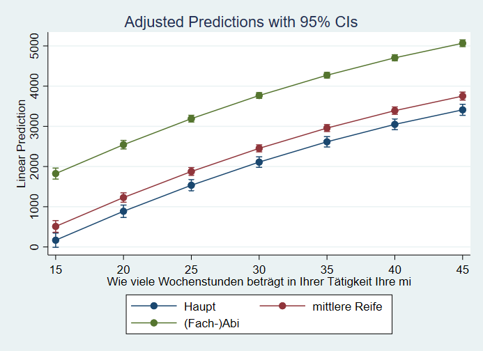

9 Regressionsmodelle
9.1 Regressionsmodelle - Grundlagen
Regressionsmodelle zeigen uns den (linearen) Trend zwischen zwei Variablen. Hier geht es darum, um wie sich im Durchschnitt var2 verändert, wenn sich var1 um eine Einheit erhöht. var2 ist also unsere abhängige, var1 unsere unabhängige Variable - wir möchten var2 mit var1 vorhersagen. Im Folgenden sehen wir, dass Regressionsmodelle mit reg erstellt werden können und wie wir den Output interpretieren können. Falls Sie nochmal mehr zu den Grundlagen erfahren wollten, findet sich hier eine ausführlichere Erklärung.
Wir betrachten einen kleinen Beispieldatensatz mit lediglich 4 Fällen und zwei metrischen Variablen var1 und var2:
use "https://github.com/filius23/Stata_Skript/raw/master/regression_bsp.dta", clear
Mit Regressionsmodellen können wir lineare Zusammenhänge zwischen zwei metrischen Merkmalen untersuchen. In Stata können wir eine Regression mit dem reg Befehl berechnen:
reg var2 var1 Source | SS df MS Number of obs = 4
-------------+---------------------------------- F(1, 2) = 11.07
Model | 12.4932432 1 12.4932432 Prob > F = 0.0797
Residual | 2.25675676 2 1.12837838 R-squared = 0.8470
-------------+---------------------------------- Adj R-squared = 0.7705
Total | 14.75 3 4.91666667 Root MSE = 1.0623
------------------------------------------------------------------------------
var2 | Coef. Std. Err. t P>|t| [95% Conf. Interval]
-------------+----------------------------------------------------------------
var1 | .5810811 .1746331 3.33 0.080 -.1703044 1.332467
_cons | 2.135135 .9485004 2.25 0.153 -1.945933 6.216203
------------------------------------------------------------------------------Hier steht jetzt eine ganze Menge an Informationen, die wir uns im Folgenden genauer ansehen werden.
Allgemein sieht unsere Regressionformel wie folgt aus:
\[\widehat{var2}=\texttt{_cons} + \beta1 \times \texttt{var1} = 2.1351 + 0.5810 \times \texttt{var1}\]
Ein positiver Wert unter Coef. in der Zeile von var1 bedeutet, dass unsere Gerade von links nach rechts ansteigt und ein negativer eine fallende Linie bedeuten würde. Der Wert unter var1 gibt an, um wieviel sich die Gerade pro “Schritt nach rechts” nach oben/unten verändert.
Die Gerade steigt also pro Einheit von
var1um 0.5810811.
Der Wert neben _cons gibt uns Auskunft darüber, wie hoch der vorhergesagte Wert für var2 wäre, wenn var1 = 0.
Für
var1= 0 würden wirvar2= 2.135135 vorhersagen.
Außerdem erkennen wir unter R-squared die Modellgüte unseres Regressionsmodells. \(R^2\) gibt die prozentuale Verbesserung der Vorhersgen durch die Gerade aus reg im Vergleich zum arithmetische Mittel an. \(R^{2}\) bezieht sich auf die Verringerung der Residuen durch das reg-Modell im Vergleich zur Mittelwertregel.
Unser Regressionsmodell kann also 84,7% der Streuung um den Mittelwert erklären.
Außerdem sehen wir oben links in der Spalte SS die “Sum of Squares”: unter Total ist die Summe der quadrierten Abweichungen der beobachteten Werte vom arith. Mittel angegeben (die Abstände zwischen den orangen und schwarzen Punkten: 14.75). Residual gibt die Summe der Abweichungsquadrate zwischen den beobachteten Werten und den vorhergesagten Werten der Regression (die Abstände zwischen den schwarzen und den blauen Punkten:2.256..).
In der Spalte P>|t| und t sehen wir die Ergebnisse eines t-Tests für die jeweiligen Koeffizienten. Hier wird der Koeffizient (sprich: die Steigung der Geraden) “gegen Null” getestet. Ist der Zusammenhang zwischen dem Alter der Befragten und ihrem Fernsehkonsum in der Population nicht eigentlich 0?
\[H_0:\, \mu_{Koeff(var1)} = 0 \qquad H_A: \mu_{Koeff(var1)} \neq 0\]
Was hier also gemacht wird, ist ein t-Test für 0.5810811 vs. \(\mu=0\). Unter P>|t| erkennen wir hier aber, dass die Irrtumswahrscheinlichkeit für die Ablehnung der \(H_0\) größer als 0,05 ist. Dementsprechend verwerfen wir die Nullhypothese nicht (wonach \(\beta1\) = 0 ist) und können hier nicht einen statistisch signifikanten Zusammenhang sprechen.

9.1.1 vorhergesagte Werte
Die vorhergesagten Werte aus reg var2 var1 entsprechen einfach der Summe aus dem Wert neben _cons und dem Koeffizienten neben var1 multipliziert mit dem jeweiligen Wert für var1. Wir starten also sozusagen bei var2=0 und gehen dann eben x Schritte entlang der Geraden.
reg var2 var1, noheader /// noheader macht den Output übersichtlicher var2 | Coef. Std. Err. t P>|t| [95% Conf. Interval]
-------------+----------------------------------------------------------------
var1 | .5810811 .1746331 3.33 0.080 -.1703044 1.332467
_cons | 2.135135 .9485004 2.25 0.153 -1.945933 6.216203
------------------------------------------------------------------------------Vorhergesagte Werte für var2 werden mit \(\widehat{var2}\) bezeichnet - das \(\widehat{}\) steht dabei für “geschätzt”:
\[\widehat{var2}=\texttt{_cons} + \beta1 \times \texttt{var1} = 2.1351 + 0.5810 \times \texttt{var1}\]
Für die erste Zeile ergibt sich also folgender vorhergesagter Wert: \(2.1351+0.5811\times1\)= 2.7162
Wir könnten also auch einen vorhergesagten Wert für einen beliebigen Wert von var1 berechnen, für 5: \(2.1351+0.5811\times5\)= 5.0406
Wir können dafür display 2.1351+0.5811*5 nutzen.
Alternativ können wir uns die Tipparbeit auch sparen, indem wir erst reg laufen lassen und dann mit _b auf die Ergebnisse zugreifen:
display _b[_cons] + _b[var1] * 55.0405405Mit predict können wir jeweils die vorhergesagten Werte für die Ausprägungen von var1 im Datensatz berechnen und in einer neuen Variable pred_vorher ablegen:
predict pred_vorher, xbHier wird also gerechnet:
2.1351 + 0.5810811 * 1 = 2.716216
2.1351 + 0.5810811 * 2 = 3.297297
2.1351 + 0.5810811 * 7 = 6.202703
2.1351 + 0.5810811 * 8 = 6.783784
var1 var2 pred_vorher mean_var2
1 1 2 2.716216 4.75
2 2 4 3.297297 4.75
3 7 7 6.202703 4.75
4 8 6 6.783784 4.75Die Grafik oben zeigt wie Vorhersagen auf Basis des Regressionsmodells aussehen: Sie entsprechen den Werten auf der blauen Geraden (der sog. Regressionsgeraden) an den jeweiligen Stellen für var1.
9.1.2 Korrelation und Regression

Außerdem entspricht der Korrelationskoeffizient der Wurzel von \(R^2\) oder umgekfehrt: \((R^2)^2\) entspricht dem quadrierten Korrelationskoeffizienten:
reg var2 var1, notable // notable um regtabelle auszublenden Source | SS df MS Number of obs = 4
-------------+---------------------------------- F(1, 2) = 11.07
Model | 12.4932432 1 12.4932432 Prob > F = 0.0797
Residual | 2.25675676 2 1.12837838 R-squared = 0.8470
-------------+---------------------------------- Adj R-squared = 0.7705
Total | 14.75 3 4.91666667 Root MSE = 1.0623pwcorr var2 var1 | var2 var1
-------------+------------------
var2 | 1.0000
var1 | 0.9203 1.0000 dis sqrt(0.8470) // R² zu corr
.92032603dis 0.9203^2 // corr zu R²
.846952099.2 kategoriale unabhängige Variablen
Wir können aber auch kategoriale unabhängige Variablen in Regressionsmodellen verwenden.
9.2.1 Dummyvariablen
Ein klassisches Beispiel für ene Dummyvariable aus unab. Variable in einem Regressionsmodell ist der Zusammenhang zwischen dem Geschlecht und dem Einkommen (Stichwort Gender Pay Gap). In der ETB 2018 ist das Geschlecht unter S1 abgelegt: 1 steht dabei für Männer, 2 steht für Frauen.
Wie können wir S1 nun in das Regressionsmodell aufnehmen? Bisher hatten wir ja nur Modelle für metrische unabhängige und abhängige Variablen erstellt. Das Geschlecht ist aber kein metrisches Merkmal (\(\Rightarrow\) sondern?). Die Zahlencodes sollten hier nicht als Werte verwendet werden. Hier gibt es keine Punktewolke, durch die sinnvoll eine Gerade durch Residuenminimierung gezogen werden kann:

In einem Regressionsmodell müssen wir Stata mit dem Präfix i. mitteilen, dass es sich bei der Variable um eine kategoriale Variable handelt:
reg F518_SUF i.S1 Source | SS df MS Number of obs = 16,635
-------------+---------------------------------- F(1, 16633) = 712.78
Model | 8.5219e+09 1 8.5219e+09 Prob > F = 0.0000
Residual | 1.9886e+11 16,633 11955853.8 R-squared = 0.0411
-------------+---------------------------------- Adj R-squared = 0.0410
Total | 2.0738e+11 16,634 12467451.9 Root MSE = 3457.7
------------------------------------------------------------------------------
F518_SUF | Coef. Std. Err. t P>|t| [95% Conf. Interval]
-------------+----------------------------------------------------------------
S1 |
weiblich | -1431.809 53.63 -26.70 0.000 -1536.93 -1326.689
_cons | 4232.735 37.51532 112.83 0.000 4159.201 4306.269
------------------------------------------------------------------------------Der Koeffizient für S1 entspricht also der Differenz zwischen dem mittleren Einkommen für Männer und Frauen. Durch den Zusatz weiblich erhalten wir zusätzlich die Information über die Referenzkategorie:
Befragte mit der Ausprägung S1 = 2, also Frauen, haben im Vergleich zu Befragten mit der anderen Ausprägung (\(\rightarrow\) Männer) ein um 1431.809 EUR niedrigeres Einkommen. Der Zusammenhang zwischen Einkommen und dem Geschlecht der Befragten ist am 0,001-Niveau signifikant.
Formal sieht unser Modell also so aus:
\[\widehat{\text{F518_SUF}} = \hat{\beta0} + \hat{\beta1} \times \texttt{S1=2}\]
Für S1=2 setzen wir dann entweder 0 oder 1 ein - je nachdem ob wir einen vorhergesagten Wert für Frauen oder für Männer berechnen wollen. 0 setzen wir immer dann ein, wenn wir einen Wert für die Referenzkategorie berechnen wollen:
4232.735 + -1431.809 \(\times 0\) = 4232.735
Für Frauen sähe die Berechnung wie folgt aus - hier setzen wir die 1 ein, weil sozusagen sex2 zutrifft:
4232.735 + -1431.809 \(\times 1\) = 2800.926
Die Logik folgt hier einem Gruppenvergleich zwischen den Gruppen. Wir vergleichen also die Mittelwerte zwischen verschiedenen Gruppen, in diesem Fall zwischen Männern und Frauen:1

Wir können die Referenzkategorie natürlich auch ändern auf S1 = 2.
Dazu geben wir ib2. an:
reg F518_SUF ib2.S1 Source | SS df MS Number of obs = 16,635
-------------+---------------------------------- F(1, 16633) = 712.78
Model | 8.5219e+09 1 8.5219e+09 Prob > F = 0.0000
Residual | 1.9886e+11 16,633 11955853.8 R-squared = 0.0411
-------------+---------------------------------- Adj R-squared = 0.0410
Total | 2.0738e+11 16,634 12467451.9 Root MSE = 3457.7
------------------------------------------------------------------------------
F518_SUF | Coef. Std. Err. t P>|t| [95% Conf. Interval]
-------------+----------------------------------------------------------------
S1 |
männlich | 1431.809 53.63 26.70 0.000 1326.689 1536.93
_cons | 2800.926 38.32464 73.08 0.000 2725.806 2876.046
------------------------------------------------------------------------------Wie hier ist dann also die Interpretation “umgekehrt”:
Befragte mit der Ausprägung S1 = 1, also Männer, haben im Vergleich zu Befragten mit der anderen Ausprägung (\(\rightarrow\) Frauen) ein um 1431.81 EUR höheres Einkommen. Der Zusammenhang zwischen Einkommen und dem Geschlecht der Befragten ist am 0,001-Niveau signifikant.
9.2.2 Vergleich mit ttest
reg F518_SUF i.S1
ttest F518_SUF,by(S1) Source | SS df MS Number of obs = 16,635
-------------+---------------------------------- F(1, 16633) = 712.78
Model | 8.5219e+09 1 8.5219e+09 Prob > F = 0.0000
Residual | 1.9886e+11 16,633 11955853.8 R-squared = 0.0411
-------------+---------------------------------- Adj R-squared = 0.0410
Total | 2.0738e+11 16,634 12467451.9 Root MSE = 3457.7
------------------------------------------------------------------------------
F518_SUF | Coef. Std. Err. t P>|t| [95% Conf. Interval]
-------------+----------------------------------------------------------------
S1 |
weiblich | -1431.809 53.63 -26.70 0.000 -1536.93 -1326.689
_cons | 4232.735 37.51532 112.83 0.000 4159.201 4306.269
------------------------------------------------------------------------------
Two-sample t test with equal variances
------------------------------------------------------------------------------
Group | Obs Mean Std. Err. Std. Dev. [95% Conf. Interval]
---------+--------------------------------------------------------------------
männlich | 8,495 4232.735 42.87073 3951.324 4148.698 4316.772
weiblich | 8,140 2800.926 31.62129 2852.935 2738.94 2862.912
---------+--------------------------------------------------------------------
combined | 16,635 3532.109 27.37647 3530.928 3478.448 3585.769
---------+--------------------------------------------------------------------
diff | 1431.809 53.63 1326.689 1536.93
------------------------------------------------------------------------------
diff = mean(männlich) - mean(weiblich) t = 26.6979
Ho: diff = 0 degrees of freedom = 16633
Ha: diff < 0 Ha: diff != 0 Ha: diff > 0
Pr(T < t) = 1.0000 Pr(|T| > |t|) = 0.0000 Pr(T > t) = 0.00009.2.3 Mehrere Ausprägungen
Diese Logik des Gruppenvergleichs lässt sich auch auf kategoriale Variablen mit mehreren Ausprägungen erweitern, bspw. der Schulbildung der Befragten (educ - siehe DoFile für Vorbereitung):
| v | l |
|---|---|
| educ | höchster Schulabschluss |
| 1 | max. Hauptschulabschluss |
| 2 | max. mittlere Reife |
| 3 | (Fach-)Abitur |
Wir müssen Stata wieder mit i. mitteilen, dass es sich um Gruppencodes (eine kategoriale Variable) handelt:
reg F518_SUF i.educ Source | SS df MS Number of obs = 16,428
-------------+---------------------------------- F(2, 16425) = 366.95
Model | 8.7409e+09 2 4.3704e+09 Prob > F = 0.0000
Residual | 1.9562e+11 16,425 11910111.4 R-squared = 0.0428
-------------+---------------------------------- Adj R-squared = 0.0427
Total | 2.0436e+11 16,427 12440764.2 Root MSE = 3451.1
------------------------------------------------------------------------------
F518_SUF | Coef. Std. Err. t P>|t| [95% Conf. Interval]
-------------+----------------------------------------------------------------
educ |
m. Reife | 258.8338 86.05536 3.01 0.003 90.15599 427.5116
(Fach-)Abi | 1633.935 80.55099 20.28 0.000 1476.046 1791.824
|
_cons | 2579.348 71.71147 35.97 0.000 2438.786 2719.91
------------------------------------------------------------------------------Auch diese Koeffizienten sind als Gruppenvergleiche zu interpretieren - und zwar immer relativ zu der Ausprägung von educ, die nicht in der Regressionstabelle aufgeführt ist. (Hier also max. Hauptschule)
Befragte mit mittlerer Reife haben ein um 258.83 Euro höheres Bruttoeinkommen als Befragte, die maximal einen Hauptschulabschluss haben. Der Zusammenhang ist am 0,01-Niveau signifikant.
Befragte mit (Fach-)Abitur verdienen 1633.93 Euro höheres Bruttoeinkommen als Befragte, die maximal Hauptschulabschluss haben. Der Zusammenhang ist am 0,001-Niveau signifikant.

Formal sieht unser Modell also so aus: \[\widehat{\texttt{F518_SUF}} = \hat{\beta0} + \hat{\beta1}\times\texttt{educ=2} + \hat{\beta2} \times \texttt{educ=3}\]
Für educ=2 wird nur dann eine 1 eingesetzt, wenn der/die Befragte mittlere Reife hat - alle anderen Variablen sind dann notwendigerweise auf 0 gesetzt. Für eine(n) Befragte*n mit max Hauptschulabschluss (also eine Person aus der Referenzkategorie) wird für alle Variablen die Null eingesetzt.
Wir können die Referenzkategorie natürlich auch ändern, bspw. auf educ = 3 - dazu geben wir ib3. an:
reg F518_SUF ib3.educ Source | SS df MS Number of obs = 16,428
-------------+---------------------------------- F(2, 16425) = 366.95
Model | 8.7409e+09 2 4.3704e+09 Prob > F = 0.0000
Residual | 1.9562e+11 16,425 11910111.4 R-squared = 0.0428
-------------+---------------------------------- Adj R-squared = 0.0427
Total | 2.0436e+11 16,427 12440764.2 Root MSE = 3451.1
------------------------------------------------------------------------------
F518_SUF | Coef. Std. Err. t P>|t| [95% Conf. Interval]
-------------+----------------------------------------------------------------
educ |
Haupt | -258.8338 86.05536 -3.01 0.003 -427.5116 -90.15599
(Fach-)Abi | 1375.101 60.07426 22.89 0.000 1257.349 1492.853
|
_cons | 2838.182 47.57088 59.66 0.000 2744.938 2931.426
------------------------------------------------------------------------------9.3 mehrere unabhängige Variablen
Natürlich können wir auch mehrere unabhängige Variablen in unser Modell aufnehmen. Beispielsweise können wir so für die Wochenarbeitszeiten kontrollieren: \[\hat{\texttt{F518_SUF}} = \beta0 + \beta1\times\texttt{educ2} + \beta2\times\texttt{educ3} + \beta3\times\texttt{F200} + \beta4\times\texttt{educ2}\times\texttt{F200}\]
reg F518_SUF i.educ F200 Source | SS df MS Number of obs = 14,480
-------------+---------------------------------- F(3, 14476) = 742.37
Model | 2.0190e+10 3 6.7301e+09 Prob > F = 0.0000
Residual | 1.3124e+11 14,476 9065696.61 R-squared = 0.1333
-------------+---------------------------------- Adj R-squared = 0.1332
Total | 1.5143e+11 14,479 10458269.1 Root MSE = 3010.9
------------------------------------------------------------------------------
F518_SUF | Coef. Std. Err. t P>|t| [95% Conf. Interval]
-------------+----------------------------------------------------------------
educ |
m. Reife | 338.4655 78.50361 4.31 0.000 184.5883 492.3426
(Fach-)Abi | 1632.405 74.10677 22.03 0.000 1487.146 1777.664
|
F200 | 110.7945 2.907157 38.11 0.000 105.0961 116.4929
_cons | -1341.138 120.729 -11.11 0.000 -1577.783 -1104.494
------------------------------------------------------------------------------Hier ändert sich dann die Interpretation: unter Konstanthaltung der Wochenarbeitszeit geben Befagte mit (Fach-)Abitur ein um 1632.40EUR höheres Einkommen als Befragte mit maximal Hauptschulabschluss an.
Ein äußerst hilfreicher Befehl in diesem Zusammenhang ist margins bzw. marginsplot:
margins, at( F200 = (15(5)45) educ = (1(1)3))
marginsplot
9.3.1 Interaktionsterme
Wenn wir uns aber fragen, ob sich der Zusammenhang zwischen der Schulbildung und dem Einkommen mit der Wochenarbeitszeit verändert, benötigen wir einen Interaktionsterm:
\[\hat{\texttt{F518_SUF}} = \beta0 + \beta1\times\texttt{educ2} + \beta2\times\texttt{educ3} + \beta3\times\texttt{F200} + \beta4\times\texttt{educ2}\times\texttt{F200} + \beta5\times\texttt{educ3}\times\texttt{F200}\]
reg F518_SUF i.educ##c.F200 Source | SS df MS Number of obs = 14,480
-------------+---------------------------------- F(5, 14474) = 465.76
Model | 2.0987e+10 5 4.1974e+09 Prob > F = 0.0000
Residual | 1.3044e+11 14,474 9011913.45 R-squared = 0.1386
-------------+---------------------------------- Adj R-squared = 0.1383
Total | 1.5143e+11 14,479 10458269.1 Root MSE = 3002
------------------------------------------------------------------------------
F518_SUF | Coef. Std. Err. t P>|t| [95% Conf. Interval]
-------------+----------------------------------------------------------------
educ |
m. Reife | -349.9542 318.3893 -1.10 0.272 -974.038 274.1296
(Fach-)Abi | -663.3032 303.201 -2.19 0.029 -1257.616 -68.99055
|
F200 | 70.78942 7.417587 9.54 0.000 56.25 85.32884
|
educ#c.F200 |
m. Reife | 19.18259 8.914635 2.15 0.031 1.708764 36.65641
(Fach-)Abi | 66.3379 8.467607 7.83 0.000 49.74031 82.9355
|
_cons | 54.97775 266.958 0.21 0.837 -468.2941 578.2496
------------------------------------------------------------------------------Bei Interaktionstermen empfiehlt sich ganz besonders, einen marginsplot zu erstellen:
margins, at( F200 = (15(5)45) educ = (1(1)3))
marginsplot
9.3.2 Quadratische Terme
Wenn wir uns aber fragen, ob sich der Zusammenhang zwischen der Wochenarbeitszeit und dem Einkommen nicht-linear verläuft, also sich abflacht oder eine zusätzliche Stunde Arbeitszeit mit höheren zusätzlichen Einkommen einhergeht (keine kausale Aussage!):
\[\hat{\texttt{F518_SUF}} = \beta0 + \beta1\times\texttt{educ2} + \beta2\times\texttt{educ3} + \beta3\times\texttt{F200} + \beta4\times\texttt{F200}\times\texttt{F200}\]
\[\hat{\texttt{F518_SUF}} = \beta0 + \beta1\times\texttt{educ2} + \beta2\times\texttt{educ3} + \beta3\times\texttt{F200} + \beta4\times\texttt{F200}^2\]
reg F518_SUF i.educ c.F200##c.F200 Source | SS df MS Number of obs = 14,480
-------------+---------------------------------- F(4, 14475) = 559.15
Model | 2.0266e+10 4 5.0665e+09 Prob > F = 0.0000
Residual | 1.3116e+11 14,475 9061089.35 R-squared = 0.1338
-------------+---------------------------------- Adj R-squared = 0.1336
Total | 1.5143e+11 14,479 10458269.1 Root MSE = 3010.2
-------------------------------------------------------------------------------
F518_SUF | Coef. Std. Err. t P>|t| [95% Conf. Interval]
--------------+----------------------------------------------------------------
educ |
m. Reife | 330.7006 78.52959 4.21 0.000 176.7725 484.6286
(Fach-)Abi | 1622.589 74.16567 21.88 0.000 1477.215 1767.964
|
F200 | 154.9909 15.559 9.96 0.000 124.4933 185.4885
|
c.F200#c.F200 | -.7509174 .2597017 -2.89 0.004 -1.259966 -.2418688
|
_cons | -1910.881 231.0717 -8.27 0.000 -2363.811 -1457.951
-------------------------------------------------------------------------------Bei quadratischen Termen empfiehlt sich ganz besonders, einen marginsplot zu erstellen:
margins, at( F200 = (15(5)45) educ = (1(1)3))
marginsplot
9.4 Übungen 9
Laden Sie die Erwerbstätigenbefragung.
9.4.1 Übung 1
Berechnen Sie ein Regressionsmodell mit der Arbeitszeit (az) aus der Hauptbeschäftigung als abh. Variable und dem Alter der Befragten (zpalter) als unabh. Variable.
+ Denken Sie daran, die Missings in zupalter zu überschreiben: mvdecode zpalter, mv(9999)
+ Weclhe Richtung hat der Zusammenhang? Arbeiten ältere Befragte eher mehr oder eher weniger?
+ Wie ist der Koeffizient zu interpretieren? Was können Sie über die Varianzaufklärung sagen?
9.4.2 Übung 2
- Berechnen Sie ein Regressionsmodell mit der Arbeitszeit (
az) aus der Hauptbeschäftigung als abh. Variable und der Ausbildung der Befragten (m1202) als unabh. Variable: wie sind die Koeffizienten zu interpretieren?mvdecode m1202,mv(-1)
9.4.3 Übung 3
Erstellen Sie ein multivariates Modell mit
azals abhängiger Variable hat und der Ausbildung (m1202) und dem Alter der Befragten (zpalter) als unabhängiger Variable.Verändern Sie das multivariate Modell aus 4. um eine Interaktion zwischen der Ausbildung (
m1202) und dem Alter der Befragten (zpalter)
9.5 Anhang
9.5.1 marginsplot anpassen
marginsplot, ///
graphregion(fcolor(white)) /// Hintergundfarbe (außerhalb des eigentlichen Plots)
plot1(color("57 65 101") msize(small)) /// Farbe & Größe für erste Gruppe
ci1opts(color("57 65 101")) /// Farbe für Konfidenzintervalle der ersten Gruppe
plot2(color("177 147 74") msize(small)) ///
ci2opts(color("177 147 74")) ///
plot3(color("16 15 20") msize(small)) ///
ci3opts(color("16 15 20")) ///
legend(cols(3) region(color(white) fcolor(white)) ) /// Spaltenzahl, Rahmen- & Hintergrundfarbe für Legende
xtitle("vertragl. vereinb. Arbeitsstunden") /// Achsentitel
ylabel(,angle(0)) /// Achen
ytitle("Einkommen (F518_SUF)") ///
title("Titel") ///
subtitle("Untertitel") ///
caption("{it:Quelle: Erwerbstätigenbefragung 2018}", size(8pt) position(5) ring(5) )
Um zu verdeutlichen wieviele Befragte jeweils das (ungefähr) gleiche Einkommen haben, wurden die Punkte hier nach links und rechts verschoben. Im Unterschied zu den bisherigen Streudiagrammen hat die relative Position innerhalb der Kategorien Männer und Frauen jedoch keine Bedeutung.↩︎